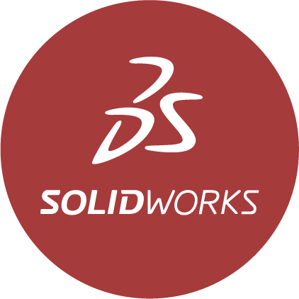

Juan Manuel Muñoz Godin
Arquitecto Naval
Madrid
Sobre mí
Soy Ingeniero Naval con una sólida formación en Arquitectura Naval, próximo a finalizar el Máster Habilitante en la Universidad Politécnica de Madrid. A lo largo de mi trayectoria, he acumulado una valiosa experiencia a través de prácticas y becas, que me han permitido desarrollar competencias clave en la realización de ensayos, extrapolación de resultados y manejo de software especializado como NX, Foran, Maxsurf, y Ansys Aqwa. Además, cuento con habilidades en programación con Matlab y Python, y experiencia en el control de versiones con GitHub.
Mi pasión por la investigación y el desarrollo me impulsa a aplicar mi capacidad analítica y creatividad para promover innovaciones en el sector de energías offshore. Estoy enfocado en soluciones prácticas y en la adopción de tecnologías emergentes, lo que me permite contribuir significativamente al éxito de proyectos complejos y sostenibles.
Soy una persona perseverante y comprometida, con una gran capacidad para trabajar en equipo y un constante deseo de enfrentar nuevos retos. Mi objetivo es aplicar mis conocimientos y habilidades para impulsar el avance tecnológico y sostenible en el sector naval.
Experiencia
Desarrollo profesional en el sector Naval
Siemens Digital Industries
Becario en Quality Assurance and Quality control
02/2023 - 06/2024
- Validación y pruebas de nuevos desarrollos en NX para arquitectura naval, garantizando su correcta integración.
- Ejecución de más de 50 pruebas automáticas en los módulos FSYSD, FDEFIN y FPIPE de Foran, utilizando Squish froglogic con Python.
Tecnologías
INTA CEHIPAR
Estudiante en prácticas en Canal de Aguas tranquilas
09/2022 - 02/2023
- Seguimiento y extrapolación de resultados en ensayos hidrodinámicos, aplicados a modelos reales en más de 5 proyectos.
- Apoyo en ensayos de cavitación y en el canal de olas, contribuyendo al estudio de nuevos software CAD/CAM.
Tecnologías

Proyectos
Aplicando la teoría a la práctica en Arquitectura Naval
Personales
Grupales
Simulación CFD.

- Obtención de resistencia al avance del buque mediante simulación CFD.
- Obtención del coeficiente de estela y comparación con fórmulas empíricas
Tecnologías
Modelo numérico de una plataforma eólica flotante en condiciones operacionales y extremas
- Modelado y simulación de la plataforma flotante a través de ANSYS-AQWA
- Evaluación de los movimientos y tensiones de la plataforma
- Análisis del sistema de anclaje
Tecnologías
TFG. Modelos de predicción de resistencia al avance en FreeCAD
- Implementación de modelos semi-empíricos de predicción de resistencia al avance dentro del software libre FreeCAD
- Método de Holtrop y método de Amadeo
Tecnologías
Análisis hidrodinámico y diseño de su propulsor de un buque histórico
- Cálculo de la resistencia al avance a través de métodos manuales, modelos semi-empíricos y CFD
- Diseño y comparación del propulsor por diversos métodos
Tecnologías
Modificación estructural

- Transformación de un buque portacontenedores mediante un aumento de manga igual al largo de un contenedor
- Aumento de la carga de contenedores en un 13.1%
- Estudio de viabilidad estructural
Tecnologías
MARS 2000 STEEL